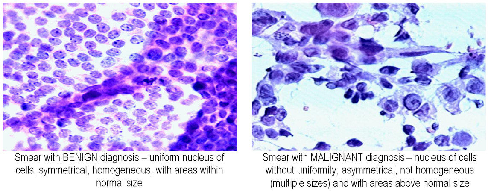

Machine Learning for Human Phenotype Classification#
Show code cell source
### Some imports
# All packages are included in the Anaconda python distribution and integral part of a machine learning Python environment).
import numpy as np # efficient matrix-vector operations
import numpy.linalg as la # linear algebra (solvers etc.)
import pandas as pd # data processing, CSV file I/O (e.g. pd.read_csv)
import seaborn as sns # data visualization
sns.set_style("whitegrid") # set the figure default style
sns.set_context("talk")
sns.set(font_scale=1.5) # bigger fonts in images
import matplotlib.pyplot as plt # basic plotting
# some not so standard imports:
import importlib # enable reloading of libraries
import plotting_util as util # useful plotting tools for teaching (see plotting_utils.py)
importlib.reload(util)
import time # timing (for example to benchmark an algorithm)
Diagnosing Breast cancer biopsies using Logistic Regression#
Wisconsin Diagnostic Breast Cancer (WDBC, 1993) data from UCI Machine Learning repository.
569 samples from patients with known diagnosis
357 benign
212 malignant
30 features extracted from fine needle aspirate slides

We are given a number of features that describe the nuclei that have been determined from image processing techniques [Street et al, 1992]. While the original data consists of 30 features and all presented methods work with 30 features, we restrict ourselves to 2 features, the concavity and the texture of the nuclei for illustrative purposes.
X, y = util.load_data(columns=["concavity_mean", "texture_mean"])
print (X.drop(['bias'], axis=1).shape)
X.drop(['bias'], axis=1).head()
(398, 2)
| concavity_mean | texture_mean | |
|---|---|---|
| 249 | 0.043280 | 14.93 |
| 58 | 0.000692 | 19.31 |
| 476 | 0.050630 | 20.53 |
| 529 | 0.037810 | 13.44 |
| 422 | 0.070970 | 16.02 |
Note that we have added a constant feature to the matrix \(\mathbf{X}\) with the column name ‘bias’.
Binary Classificaiton#
Classification refers to the task of predicting a class label \(y\), i.e., the diagnosis, from a feature vector \(\bf{x}\). For the case, where \(y\) can take one of two values, we speak of binary classification.
In machine learning, we assume that we are given pairs of \((\mathbf{x}, y)\), the so-called training data, we would like to train a function \(f(\mathbf{x})\) that predicts the value of \(y\).
For the task at hand, this means that for the image features, we Then given a new image for which we don’t know the diagnosis, we can predict the diagnosis based on what we have learned from from the training data. We call the new image the test data.
The shape of the nulei has been determined and coded in a number of features. Let’s look at the data:
print (y.shape)
print (y.unique())
print ("Benign samples 'B': {:}".format((y=='B').sum()))
print ("Malignant samples 'M': {:}".format((y=='M').sum()))
(398,)
['B' 'M']
Benign samples 'B': 249
Malignant samples 'M': 149
plot the data#
f, ax = plt.subplots(figsize=(7, 7))
ax = util.scatter_plot_kde2(X,y)
plt.ylim([8,39.9])
plt.xlim([-0.01,0.45])
# plt.savefig("./uci_breast_cancer/plots/scatter.png", dpi=600)
(-0.01, 0.45)

There are many ways to draw a function that separates the samples. But what is a good one?
In this lecture, we will look for a linear function for the features \(x_1\) and \(x_2\) that separates the two classes.
Equivalently, we can use vector-notation:
where
and
Note, that we have included the bias \(b\) into the vector \(\mathbf{w}\) by creating a new feature in \(\mathbf{x}\) equal to 1.
importlib.reload(util)
f, ax = plt.subplots(figsize=(7,7))
ax, clf = util.plotfun2D_logreg(X,y, threshold=0.5, prob=True)
plt.ylim([8,39.9])
plt.xlim([-0.01,0.45])
# plt.savefig("./uci_breast_cancer/plots/scatter_decision_boundary.png", dpi=600)
(-0.01, 0.45)

importlib.reload(util)
f, ax = plt.subplots(figsize=(7,7))
ax, clf = util.plotfun2D_logreg(X,y, threshold=0.5, prob=True, second_line=True)
plt.ylim([8,39.9])
plt.xlim([-0.01,0.45])
# plt.savefig("./uci_breast_cancer/plots/scatter_decision_boundary_secondline.png", dpi=600)
(-0.01, 0.45)

The classifier predicts all samples on one side of the decision boundary to belong to one class, all others to the other class.
As we observe, with a linear function, we have to accept that there are missclassifications, especially if we have a large training data set, the training data is rarely linearly separable.
The logistic sigmoid#
As the data are not separable, it is desirable to encode our degree of (un)-certainty by assigning a probability for a sample belonging to class \(c_1\) each sample.
In this example, \(c_1\) refers to a Malignant diagosis.
\(y\) is the class label of the sample and \(\pi\) is the logistic sigmoid.
The logistic \(\pi(a)\) is a function between 0 and 1, making it suited for modeling probabilities. It is called a sigmoid function because of its s-shape.
Here, as we are modeling linear functions, \(a=\mathbf{x}_n\mathbf{w}\), where \(\mathbf{x}_n\) is the feature vector for the \(n\)-th individual (given), and \(\mathbf{w}\) is a weight vector that we would like to find.
def logistic(a):
"""
returns the logistic sigmoid pi(a)
Keyword arguments:
a -- scalar or numpy array
"""
expa = np.exp(a)
return expa / (1.0 + expa)
a = np.linspace(-8.0,8.0,100) # create 100 points on a line
# Set up the figure
f, ax = plt.subplots(figsize=(7, 6))
linex=np.arange(-9, 9, 0.003)
liney = np.arange(-0.1, 1.1, 0.01)
plt.plot([0,0],[-1,2],':k',alpha=0.8,linewidth=3)
plt.plot(a, logistic(a), 'k', linewidth=5)
# plt.plot(a, 1.0-logistic(a), 'k:', linewidth=5, alpha=0.5)
plt.xlim([-8,8])
plt.ylim([-0.0,1.02])
plt.yticks([0.0,0.5,1.0])
plt.xticks([-8,-4,0,4,8])
# ax.patch.set_facecolor('white')
plt.legend(['decision function',r'$\pi(\mathbf{xw})$','B',"R"])
xx1, xx2 = np.meshgrid(linex, liney)
plt.pcolormesh(xx1, xx2, logistic(xx1), cmap='bwr', alpha=0.05)
ax.patch.set_facecolor('white')
ax = plt.xlabel(r'$\mathbf{xw}$')
ax = plt.ylabel(r'$p(y=c_1|\mathbf{x})$')
clf = util.LogisticRegression()
clf.fit(X=X.values,y=y.values[:,np.newaxis])
Xw = X.values.dot(clf.w)
bins = np.linspace(-10, 10, 25)
plt.hist(Xw[y.values=='M'], bins, alpha=0.6, label='M', color='r', density=True)
plt.hist(Xw[y.values=='B'], bins, alpha=0.6, label='B', color='b', density=True)
plt.legend(['decision function',r'$\pi(\mathbf{xw})$','$c_1$ (M)',"$c_2$ (B)"])
# plt.scatter(Xw, (y.values[:,np.newaxis]=="M") , (y.values[:,np.newaxis]=="M"), size=20)
ax = plt.title("The logistic sigmoid")
# plt.savefig("./uci_breast_cancer/plots/logistic_sigmoid_data.png", dpi=600)

a = np.linspace(-8.0,8.0,100) # create 100 points on a line
# Set up the figure
f, ax = plt.subplots(figsize=(7, 6))
linex=np.arange(-9, 9, 0.003)
liney = np.arange(-0.1, 1.1, 0.01)
# xx1, xx2 = np.meshgrid(linex, liney)
# plt.pcolormesh(xx1, xx2, logistic(xx1), cmap='bwr', alpha=0.1)
plt.plot([0,0],[-1,2],':k',alpha=0.8,linewidth=3)
plt.plot(a, logistic(a), 'k', linewidth=5)
# plt.plot(a, 1.0-logistic(a), 'k:', linewidth=5, alpha=0.5)
plt.xlim([-8,8])
plt.ylim([-0.02,1.02])
plt.yticks([0.0,0.5,1.0])
plt.xticks([-8,-4,0,4,8])
# ax.patch.set_facecolor('white')
plt.legend(['decision function',r'$\pi(\mathbf{xw})$','B',"R"])
ax = plt.xlabel(r'$\mathbf{xw}$')
ax = plt.ylabel(r'$p(y=c_1|\mathbf{x})$')
clf = util.LogisticRegression()
clf.fit(X=X.values,y=y.values[:,np.newaxis])
Xw = X.values.dot(clf.w)
bins = np.linspace(-10, 10, 20)
plt.hist(Xw[y.values=='B'], bins, alpha=0.5, label='B', color='b', density=True)
plt.hist(Xw[y.values=='M'], bins, alpha=0.5, label='M', color='r', density=True)
# plt.scatter(Xw, (y.values[:,np.newaxis]=="M") , (y.values[:,np.newaxis]=="M"), size=20)
ax = plt.title("The logistic sigmoid")
# plt.savefig("./uci_breast_cancer/plots/logistic_sigmoid_data.png", dpi=600)

Conversely, the probabily to belong to the class \(c_2\) (Benign) is given by \(1-\pi(a)\).
Objective#
We need to find a way to obtain a suitable set of weights.
We do so by writing down a function, the so-called objective function \(L\) and then determine the weights \(\mathbf{w}^{opt}\) that minimize \(L\).
We would like to assign high probability to all the instances that belong to the target class and low probability otherwise.
Loss Function#
The loss function measures the errors we make on the training data. So for each error, we record a loss. As we are trying to assign high probabilities to the correct class, we would like to obtain a function that records a loss, whenever we assign low probability to the correct class \(c_{true}\).
xx = np.arange(0.00001,1.0,0.00001)
yy = -np.log(xx)
fig, ax = plt.subplots(figsize=(8, 8))
plt.plot(xx,yy, linewidth=5)
plt.title("error function for a single $y_n$")
plt.ylabel(r"$-\ln( p(c_{true}|\mathbf{x}) )$")
plt.xlabel(r"$p(y_n=c_{true}|\mathbf{x})$")
plt.xlim([-0.01,1.0])
plt.ylim([0,10])
# plt.savefig("./uci_breast_cancer/plots/log_error.png", dpi=600)
(0.0, 10.0)

By summing this loss over all samples, we obtain the log-loss or cross-entropy function.
Regularizer#
In addition to the loss, we define the regularizer as a fcuntion that penalizes very large values of \(\mathbf{w}\) and to improve numerical stability. In this example, we use the square of the Euclidean norm of \(\mathbf{w}\) as regularizer.
The (hyper)-parameter \(\lambda\) weighs the importance of the regularizer vs. the loss. In this example, we always use \(\lambda=10^{-3}\).
In-depth discussion of the regularizer is beyond the scope of this lecture.
xx = np.arange(-5,5,0.01)
yy = 0.001*0.5 * xx * xx
f, ax = plt.subplots(figsize=(8, 8))
plt.plot(xx,yy,linewidth=5)
plt.xlim([-5,5])
plt.ylim([-0.00006,0.013])
plt.xlabel("$w_d$")
plt.ylabel(r"regularizer ($\lambda=10^{-3}$)")
plt.title("Weight Shrinkage")
# plt.savefig("./uci_breast_cancer/plots/regularizer.png",dpi=600)
Text(0.5, 1.0, 'Weight Shrinkage')

Combined objective#
Taken together, we obtain the Logistic Regression objective \(L(\mathbf{w})\).
Fitting the model#
Now that we have an objective, how do we obtain a good set of parameters?
Let’s look at the objective in 2 dimensions.
importlib.reload(util)
f, ax = plt.subplots(figsize=(9, 8))
ax = util.eval_optimizer(X,y)
# plt.savefig("./uci_breast_cancer/plots/objective_heatmap_2d.png", dpi=600)
[iteration 7, 0.0007s]: objective: 1.141e+02, gradient l2 norm : 1.091e-07

The image visualizes the objective \(L\) as a function of the two weights \(w_1\) and \(w_2\), with objective values going from low (yellow) to high (red). The minimum is marked by a blue dot.
Taking the derivative#
The derivative of the objective with respect to a single \(w_d\) is defined as follows:
\(I(a==b)\) denotes the indicator function, which yields 1 if \(a=b\) and 0 otherwise.
The sign of the derivative indicates the direction in which the objective gets larger or smaller and the magnitude the rate.
The gradient#
By stacking all partial derivatives into a single vector, we obtain the gradient \(\nabla_\mathbf{w} (L)\).
\(\nabla_\mathbf{w} (L)\) is a \(D\)-dimensional vector pointing in the direction of steepest growth of the objective and in the opposite direction in which the steepest reduction. Using the gradient, we can define a simple optimization algorithm.
Steepest descent#
The steepest descent algorithm uses the gradient by making small steps in the direction \(-\nabla_{\mathbf{w}^{t}} (L)\). You can think about it as being on a hill and descending the hill in the steepest direction downwards. Therefore the algorithm is called steepest descent.
given learning rate \(0<\alpha<1.0\) and current weight estimate \(\mathbf{w}^{t}\). Iterate by setting \(\mathbf{w}^{t+1} = \mathbf{w}^{t} - \alpha \cdot \nabla_{\mathbf{w}^{t}} (L)\).
A typical value for \(\alpha\) is around \(10^{-4}\).
A problem with steepest descent is that the estimate tends to oscillate and often even overshoots and diverges (leading to an increase in the objetive). Getting the learning rate right is very hard, trading off progress in learning and risk of diverging. Many tricks exit to improve learning in gradient descent, such as weight decay, where the learning rate is gradually reduced during learning.
f, ax = plt.subplots(figsize=(9, 8))
ax = util.eval_optimizer(X,y, steep=True)
# plt.savefig("./uci_breast_cancer/plots/objective_heatmap_2d_steepest.png", dpi=600)
[iteration 7, 0.0008s]: objective: 1.141e+02, gradient l2 norm : 1.091e-07
[iteration 200000, 9.2913s]: objective: 1.142e+02, gradient l2 norm : 1.310e-01

In the image above, where we applied weight decay, multiplying the learning rate by \(1-10^{-6}\) after each iteration, the learning does not converge to the minimum (the blue dot) after 200.000 iterations.
Using curvature information#
We can build a better learning algorithm by using second order information, utilizing a second-order Taylor-series expansion around the current weight estimate \(\mathbf{w}^t\).
importlib.reload(util)
f, ax = plt.subplots(figsize=(10, 10))
ax = util.eval_optimizer1D(X, y, taylor1=True, taylor2=False)
# plt.savefig("./uci_breast_cancer/plots/derivative_1D.png", dpi=600)
[iteration 7, 0.0007s]: objective: 1.141e+02, gradient l2 norm : 1.091e-07

importlib.reload(util)
f, ax = plt.subplots(figsize=(10, 10))
ax = util.eval_optimizer1D(X, y, taylor1=True, taylor2=True)
# plt.savefig("./uci_breast_cancer/plots/newton_step_1D.png", dpi=600)
[iteration 7, 0.0007s]: objective: 1.141e+02, gradient l2 norm : 1.091e-07

The image depicts the idea for a single weight \(w_1\). At the current estimate \(w_1^{t}\), we compute the first and second derivatives of the objective to form a parabolic fit to the objective \(L\). Then, we obtain \(w_1^{t+1}\) as the minimum of that parabolic and iterate.
The Hessian#
In higher dimensions, the matrix second derivatives is called the Hessian \(\nabla^2_{\mathbf{w}}(L)\).
The Newton-Raphson algorithm#
The update rule using second order information can be derived by iterating the following update until the Euclidiean (\(l^2\)) norm of the gradient is close to 0.
f, ax = plt.subplots(figsize=(9,8))
ax = util.eval_optimizer(X,y, steep=True, irls=True)
# plt.savefig("./uci_breast_cancer/plots/objective_heatmap_2d_steepest_irls.png", dpi=600)
[iteration 7, 0.0012s]: objective: 1.141e+02, gradient l2 norm : 1.091e-07
[iteration 200000, 9.2889s]: objective: 1.142e+02, gradient l2 norm : 1.310e-01

The blue line corresponds to minimization using the Newton-Raphson algorithm. We observe that the curvature information provided by \(\mathbf{H}_{\mathbf{w}^{t}}\) dramatically speeds up optimization, with convergence achieved after 7 iterations.
The implementation of logistic regression#
Let’s put things together and implement logistic regression.
class LogisticRegression(object):
"""
Implements logistic regression classifier with the objective
sum_{n in class_{1}} log(pi(x_n.dot(w))) + sum_{n in class_{0}} log(1-pi(x_n.dot(w))) + lambd/2 * w.T.dot(w)
"""
def __init__(self, lambd=1e-3, tol=1e-5, max_iter=100):
"""
Keyword arguments:
lambd -- regularization paramter for L2 norm of w (scalar or numpy 1D array with length equal to the number of dimensions) (default: 1e-5)
tol -- tolerance of the optimizer (default: 1e-5)
max_iter -- maximum number of interations of the optimizer (default: 100)
"""
self.w = None # create a placeholer for the weights w
self.class_labels = None # crete a placeholder for the list of class labels
self.lambd = lambd
self.tol = tol
self.max_iter = max_iter
def fit(self, X, y):
"""
minimize the objective
sum_{n in class_{1}} log(pi(x_n.dot(w))) + sum_{n in class_{0}} log(1-pi(x_n.dot(w))) + lambd/2 * w.T.dot(w)
"""
self.class_labels = np.unique(y)
if len(self.class_labels)>2:
raise Exception("too many classes")
self.w = np.zeros((X.shape[1], 1)) # zero-init w
num_iter = 0
gradient_last = np.inf # initialize the gradient to a large number
# Newton-Raphson / IRLS updates
while (np.sqrt(gradient_last*gradient_last).sum() > self.tol) and (num_iter<self.max_iter):
gradient_last = self.perform_update(X=X,y=y)
num_iter += 1
return self
def perform_update(self, X, y):
"""
compute and perform a single step in the iterative optimization scheme
"""
# compute the Iteratively Reweighted Least Squares update (equiv. Newton-Raphson)
hessian = self.hessian(X=X, y=y)
gradient = self.gradient(X=X, y=y)
update = - la.lstsq(hessian, gradient, rcond=None)[0]
self.w = self.w + update
return gradient
def predict_proba(self, X, min_val=1e-15):
"""
compute the probabilities of the lexicographically larger class label
"""
z = logistic(np.dot(X, self.w))
z[z<min_val] = min_val
z[z>1-min_val] = 1-min_val
return z
def predict(self, X, threshold=0.5):
"""
predict a class label using pi(x)>=threshold
"""
prediction = np.array([self.class_labels[0]] * X.shape[0])[:,np.newaxis]
prediction[self.predict_proba(X) >= threshold] = self.class_labels[1]
return prediction
def objective(self, y, X):
"""
L = sum_{n in class_{1}} log(pi(x_n.dot(w))) + sum_{n in class_{0}} log(1-pi(x_n.dot(w))) + lambd/2 * w.T.dot(w)
"""
pi = self.predict_proba(X)
log_0_pi = np.log(pi[y==self.class_labels[1]])
log_1_pi = np.log(1.0-pi[y==self.class_labels[0]])
loss = -log_0_pi.sum() - log_1_pi.sum() # this version is more stable for perfect prediction
regularizer = 0.5* (self.lambd * self.w * self.w).sum()
return loss + regularizer
def gradient(self, X, y):
"""
compute the [D x 1] gradient vector
nabla w := [dL / dw_j for each j in 1..D]
"""
pi = self.predict_proba(X)
return np.dot(X.T, pi-(y==self.class_labels[1]))+ self.lambd * self.w
def hessian(self, X, y):
"""
compute the [D x D] Hessian matrix
nabla^2 w := [d^2 L / (dw_i dw_j) for each i,j in 1..D]
"""
pi = self.predict_proba(X)
return (X * (pi * (1.0-pi))).T.dot(X) + self.lambd * np.eye(X.shape[1])
Evaluating the model#
Confusion matrix#
Predicted Positive |
Predicted Negative |
|
|---|---|---|
Positive |
True Positive (\(TP\)) |
False Negative (\(FN\)) |
Negative |
False Positive (\(FP\)) |
True Negative (\(TN\)) |
Trade-off between Sensitivity and Specificity#
Train error vs. Test error#
Let us compute these quantities on the test data:
importlib.reload(util)
f, ax = plt.subplots(figsize=(4.5,3.8))
util.plot_confusion_matrix(x=X, y=y, x_test=X, y_test=y,threshold=0.5)
# plt.savefig("confusion_matrix_train.png",dpi=600)
number samples: 398
number M: 149
number B: 249
Accuracy : 0.902
Sensitivity: 0.826
Specificity: 0.904

importlib.reload(util)
X_test,y_test = util.load_data(testing_data=True, columns=["concavity_mean", "texture_mean"])
f, ax = plt.subplots(figsize=(4.5,3.8))
util.plot_confusion_matrix(x=X, y=y, x_test=X_test, y_test=y_test,threshold=0.5)
# plt.savefig("confusion_matrix_test.png",dpi=600)
number samples: 171
number M: 63
number B: 108
Accuracy : 0.854
Sensitivity: 0.762
Specificity: 0.828

importlib.reload(util)
f, ax = plt.subplots(figsize=(7,7))
ax, clf = util.plotfun2D_logreg(X,y,X_test=X_test, y_test=y_test, threshold=0.5, prob=True)
plt.ylim([8,39.9])
plt.xlim([-0.01,0.45])
# plt.savefig("./uci_breast_cancer/plots/scatter_decision_boundary_test.png", dpi=600)
(-0.01, 0.45)

Conclusions#
use data to derive a program instead of relying on expert
need a target objective to learn and regularization to avoid overfitting
predictions are uncertain -> probabilities
fitting to data
References#
[Street et al, 1992] N. Street, W. Wolberg, O.L. Mangasarian: Nuclear Feature Extraction For Breast Tumor Diagnosis. IS&T/SPIE 1993.